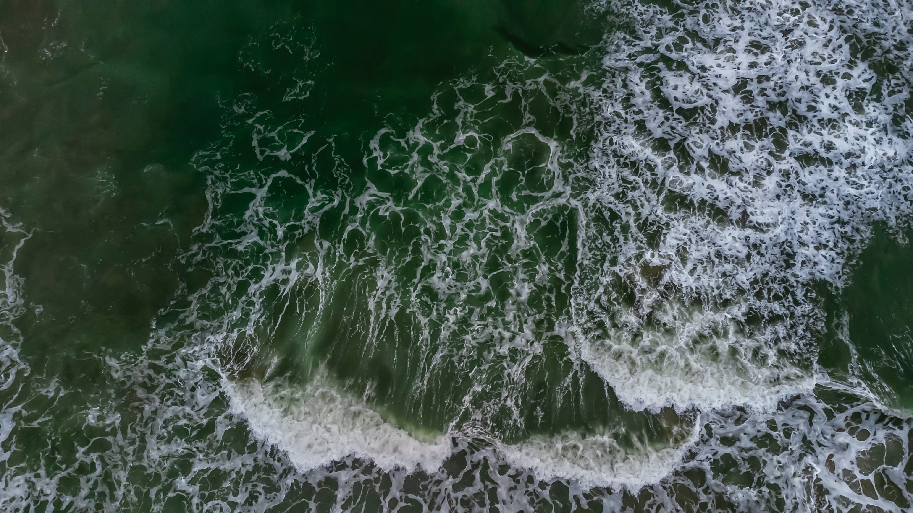
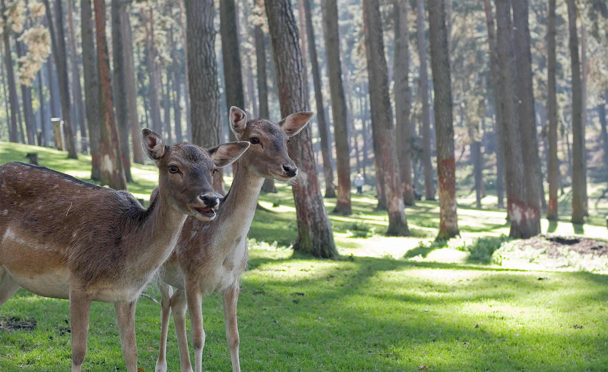

Explore the Wonders of Sri Lankan Wildlife with EcoQuest
Welcome to EcoQuest, your go-to Sri Lankan Wildlife Tour Guide offering a unique virtual experience that brings the beauty of the island's forests and wildlife to your home.
Known as the "Pearl of the Ocean," Sri Lanka is famous for its stunning beaches and equally remarkable wildlife and safari tours. Let EcoQuest be your virtual guide to the diverse ecosystems and rich biodiversity of this tropical paradise.
Why Choose EcoQuest?
1. Virtual Exploration: Immerse yourself in a virtual safari adventure from the comfort of your home, experiencing the wonders of Sri Lankan wildlife through high-quality multimedia content and interactive guides.
2. Expert Guides: Our passionate guides are experts in Sri Lanka's ecology, providing valuable insights into the behavior, habitats, and conservation efforts related to the diverse wildlife species found in the country.
3. Conservation Focus: EcoQuest is committed to wildlife conservation. Learn about ongoing projects in Sri Lanka and discover how you can contribute to preserving these precious ecosystems and their inhabitants.
Get ready to be amazed, inspired, and educated as we unveil the secrets of the Pearl of The Ocean's untamed wilderness!

Experience the Magic of Sri Lankan Forests and Wildlife
Feel the vibes of the Sri Lankan wilderness from the comfort of your home. Explore the incredible wildlife and safari tours that make Sri Lanka, also known as
The Pearl of The Ocean, truly special.
Embark on a virtual journey to experience the enchanting wonders of Sri Lankan forests and wildlife. Immerse yourself in the breathtaking beauty of this island nation, often referred to as "The Pearl of The Ocean." From the lush greenery of its tropical forests to the diverse array of wildlife that calls it home, Sri Lanka offers a unique and mesmerizing adventure.
Discover the Diverse Wildlife
1. Elephants in Udawalawe National Park:
Witness the majesty of Sri Lanka's elephants in Udawalawe National Park. Home to a large population of these gentle giants, the park provides a chance to observe their natural behavior in a stunning natural setting.
2. Leopards in Yala National Park:
Yala National Park boasts a thriving leopard population. Join a virtual safari to catch glimpses of these elusive big cats as they roam freely in their natural habitat.
3. Exotic Birds in Sinharaja Forest:
Explore the vibrant avian life in Sinharaja Forest, a UNESCO World Heritage Site. From colorful parrots to rare species, the forest is a haven for bird enthusiasts.

Sri Lanka's Diversity
Sri Lanka, a gem in the Indian Ocean, boasts more than just its stunning beaches; it is also celebrated for its rich biodiversity and captivating safari experiences. As we embark on a journey through the island's renowned national parks, including Yala and Wilpattu, get ready to witness the majesty of Sri Lanka's wild inhabitants.
The regal Sri Lankan leopard, a symbol of the island's untamed beauty, will undoubtedly be one of the highlights of your safari adventure. These elusive big cats roam freely in their natural habitat, showcasing their grace and power in the dense foliage. As you navigate the winding paths of Yala and Wilpattu, the presence of these magnificent creatures is sure to leave you in awe.
Apart from the regal leopards, Sri Lanka's national parks are also home to a thriving population of elephants. Observing these gentle giants in their natural environment is a truly humbling experience. Marvel at their familial bonds and witness their playful interactions as they go about their daily routines in the heart of the wilderness.
The avian enthusiasts among you will be delighted by the diverse and colorful bird species that call these national parks home. From vibrant kingfishers to majestic eagles, the air is filled with the sights and sounds of Sri Lanka's exotic birdlife. Our expert guides, well-versed in the intricacies of the local ecosystems, will share fascinating insights into the behaviors and ecological importance of these incredible creatures.
Immerse yourself in the sights and sounds of Sri Lanka's untamed beauty, where each moment brings you closer to nature's wonders. Whether it's the stealthy movements of a leopard, the trumpeting of elephants, or the melodious calls of exotic birds, every step of this safari journey.
.jpg)